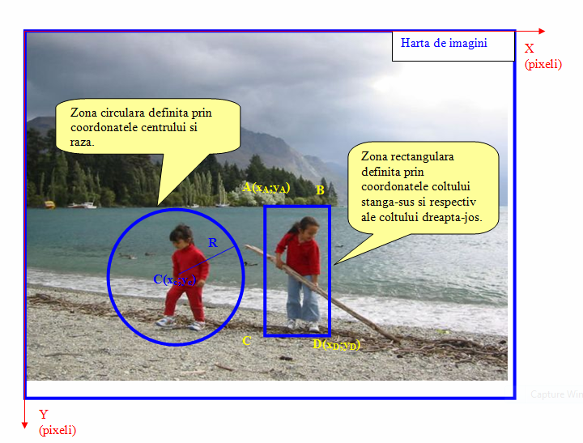
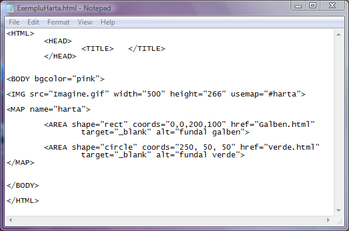
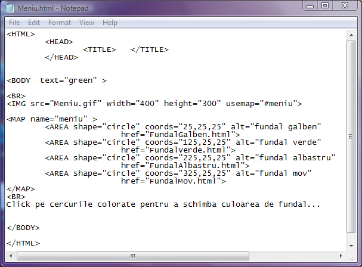
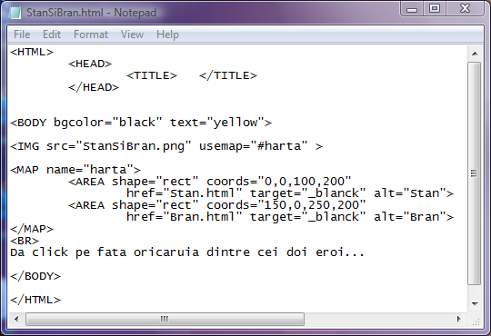

Harti de imagini
Hartile de imagini sunt instrumente foarte utile pentru a transforma in zone active portiuni din
imaginile inserate in pagina web. Practic, o harta de imagini defineste pe suprafata unei poze zone pe
care le transforma in zone active utilizabile pentru legaturi.
Orice harta de imagini incepe cu o eticheta MAP si se termina cu o eticheta /MAP. Fiecarei harti de imagini
i se poate atribui un nume.
Zonele din harta de imagini se definesc prin cate o eticheta AREA precizata prin coordonatele ei semnificative.
Pentru fiecare zona se poate defini o legatura, astfel ca daca utilizatorul da click pe zona respectiva se va
deschide pagina web spre care tinteste legatura. In figura de mai jos sunt ilustrate maparea unei imagini,
coordonatele ecrtanului si definirea unor zone de diferite forme.

Iata un exemplu de harta de imagini. Click pe cod pentru a vedea pagina web.
Dupa deschiderea paginii web dati click pe discurile colorate pentru a deschide pagini web cu fundalul de
aceeasi culoare.

Observatii:
In eticheta IMG se poate remarca prezenta atributului usemap a carui valoare este numele hartii de
imagini (precedat de #) asociate cu imaginea Imagine.gif inserata in pagina web. Prin urmare zonele definite
de etichetele AREA vor fi definite pe aceasta poza!
Harta de imagini are numele "harta" fapt setat prin atributul name al etichetei MAP. Prima dintre zonele
active ale hartii de imagini are forma rectangulara, fapt definit de valoarea "rect" a atributului shape.
Atributul coords are ca valori coordonatele unui dreptunghi. Primele doua valori, 0 si 0, sunt
coordonatele coltului stanga-sus relative la imagine, in timp ce ultimele doua valori reprezinta coordonatele
coltului dreapta-jos ale dreptunghiului. In acest fel este definita o zona dreptunghiulara in asa fel incat
ea sa cuprinda primul cerc colorat din poza.
Atributul href face ca zona dreptunghiulara sa fie activa in sensul ca la click pe acea zona se va
deschide pagina web a carei adresa este valoarea atributului href. In exemplul de mai sus va fi deschisa pagina
web Galben.html care e o pagina goala cu fundalul galben.
Atributul target setat la valoarea "_blanck" determina deschiderea paginii web tinta intr-o noua
instanta a browserului.
Atributul alt are ca valoare un text inlocuitor pentru imagine. Acest text poate fi vazut atunci cand
cursorul de mouse este deasupra zonei active.
CONCLUZII:
Etichetele si atributele cu ajutorul carora se gestioneaza hartile de imagini sunt:
1) Eticheta MAP
Atribut:
name="nume_harta"
- stabileste numele hartii de imagini
2) Eticheta AREA
Atribute:
shape="figura"
-stabileste forma zonei active AREA si are ca valori "rect","circle" sau "poly", adica
dreptunchi, cerc sau poligon.
coords="coordonate semnificative"
-delimiteaza zona activa prin sirul de coordonate ale punctelor semnificative ale figurii.
Pentru un dreptunghi sunt suficiente coordonatele punctului din coltul stanga-sus si respectiv ale punctului
din coltul dreapta-jos. Atributul coords pentru un dreptunghi va avea intre ghilimele si separate prin
virgula patru coordonate. In cazul unei zone active circulare se vor specifica coordonatele centrului
cercului si raza cercului, adica trei valori. In cazul unei zone poligonale cu N varfuri atributul coords
va avea 2N valori fiecare pereche reprezentand cate un varf al poligonului.
href="tinta"
-stabileste pagina web tinta a zonei active. "Tinta" este adresa URL a fisierului care se va deschide la
click pe zona activa.
target="fereastra tinta"
-stabileste fereastra sau cadrul in care se va deschide pagina web tinta. Valorile acestui atribut sunt aceleasi
ca si cele ale atributului target al etichetei A.
alt="text"
-seteaza un text care va fi vizibil daca mouse-ul este plasat peste zona activa.
EXEMPLE
Iata un alt exemplu de utilizare a hartilor de imagini, in care se creeaza iluzia ca la click pe
un cerc colorat se schimba culoarea de fundal a paginii web. In realitate se incarca in aceeasi fereastra
o alta pagina web identica dar cu fundalul diferit colorat.

Un ultim exemplu, cu personaje simpatice, este menit sa ilustreze faptul ca diferitele portiuni dintr-o poza
pot constitui zone active inspre diferite pagini web.
